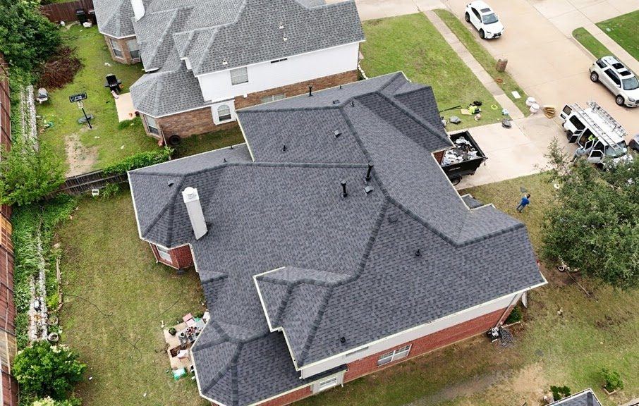

Emergency temporary protection
Covering an actively open roof to limit further water damage while a permanent repair is scheduled.
Integrity that keeps you covered.
Storm Restoration
After a North Texas storm, the roofs that get handled well are the ones that got looked at properly first.

Storm season here produces two problems at once: real damage, and a flood of out-of-town crews who follow the hail. Both need to be approached carefully. Damage should be documented before anybody starts talking about scope, and the company documenting it should still be reachable next year.
We inspect after storms, document what we find with photographs, explain the roofing scope in plain terms, and do the work. What we do not do is tell you what your insurance carrier will decide.
Pieces of shingle or granule wash in the driveway after a storm mean the roof gave something up.
Soft metal shows hail impact clearly and is a good indicator to check the roof itself.
A crease across a shingle means it was bent back by wind and the seal is broken even if it laid back down.
The clearest sign of all, and the one that should be looked at first.
Hail is localized. If the street took a hit, your roof deserves a look.
Causes
Impact bruising, granule loss, and fractured mat. The dominant storm damage type in this region.
Uplift along rakes, ridges, and edges, frequently ahead of the rain and often more damaging than the hail.
Water forced sideways under shingle edges and into wall transitions that would shed a normal rain fine.
Impact punctures and broken decking, especially under mature trees in older neighborhoods.
Our inspection
North Texas storms tend to arrive as fast-moving squall lines in spring, with wind out ahead and hail in the core. Damage is often patchy at the neighborhood level, which means your roof and the one across the street can end up in genuinely different condition after the same storm.
Process
Active leaks and open roofs get prioritized.
Damage photographed and recorded, including date and location context.
We explain what is storm-related, what is wear, and what the repair scope would be.
Free written estimate describing the roofing work in specific terms.
Repair or replacement performed once scope is approved.
Cleanup, nail sweep, and a review of completed work with you.
Options
Covering an actively open roof to limit further water damage while a permanent repair is scheduled.
Where damage is confined to specific slopes or details.
Where impact damage is widespread across the roof system.
Photographs and a written description of the roofing scope that you may share with your insurance carrier if you choose to.
Gutters, fascia, soffit, gable siding, and fencing handled alongside the roof rather than months later.
The most exposed lines on the roof, which take uplift first and are routinely skipped.
That is what the free inspection is for. A licensed inspector will tell you what your roof actually requires.
Free inspectionNo-obligation estimateFully insuredLicensed inspectors
In detail
Hail in the Metroplex falls in narrow, erratic corridors. A swath can be a couple of miles wide, and within a single suburb the damage line frequently runs down the middle of a street. One side gets replaced, the other side genuinely does not need it, and both households are convinced the other has been misled.
This is also why regional storm reports are a starting point rather than an answer. Knowing that hail fell in your city tells you very little about your address. It is the reason a property-specific, documented inspection is worth an hour of your time and a driveway opinion is worth almost nothing.
Storm damage on an asphalt roof frequently does not leak. Not that week, not that season, sometimes not for a year or more. The shingle sits there looking approximately fine while the exposed mat degrades under UV, and the roof quietly loses several years of service life.
By the time water finally comes through a ceiling, connecting that leak to a specific storm has become considerably harder, and any timeline in your policy has usually run out. The people who come out of a hail season well are almost always the ones who got the roof documented while the evidence was fresh, whether or not they did anything about it at the time.
A significant hail event draws crews from several states. Many are competent. Some are not, and some will not exist in a year. The ones to be careful of are identifiable by what they say rather than by how they look.
Be cautious of anyone who promises a specific insurance outcome, offers to cover or absorb your deductible, wants a signature on the doorstep, or describes a document as “just authorising an inspection.” Ask where the company is based, how long it has worked in this area, and who you would call in two years. Those three questions are a very effective filter, and nobody legitimate minds answering them.
What to expect
Most of what makes a job go badly is not craftsmanship — it is being left to guess what happens next. Here is the sequence.
Free inspectionNo-obligation estimateFully insured
Wet shingles and possible structural damage make that genuinely dangerous, and there is nothing up there an inspection will not find.
Debris in the yard, dented gutters and vents, damaged fencing, and every interior stain. Same-day photographs are worth far more than next-week ones.
A licensed inspector records the roof slope by slope, with soft metals checked as corroborating evidence.
We separate what is storm-related from ordinary wear, and explain both in plain terms.
Free, itemized, describing the roofing work specifically. Yours to use however you choose.
Repair or replacement once you approve the scope, then cleanup and a walkthrough.
From our inspections
The same storm dents gutters, cracks gable siding, tears soffit, and flattens fences. Those get missed and then handled months later by someone else.
Shingles folded back by wind and settled down again are broken shingles. If nobody hand-tested the seals, nobody checked.
Photographs with no clear connection to a specific event are much less useful later than they would have been on the day.
Protection is a short-term measure. Sun and wind degrade it, and it needs replacing with real work.
Why Timber
Related services
Where we work
Further reading
Questions
No. We are roofers, not public adjusters, attorneys, or insurance representatives. We can document visible damage, explain the roofing scope, and provide project information that you may share with your carrier. Decisions about your claim rest between you and your insurer.
Yes. Impact damage frequently does not leak immediately. It shortens the roof's life and shows up later, sometimes after the window to address it has closed.
Sooner is better, particularly if there is any sign of active intrusion. Documentation is also more useful when it is close in time to the event.
Because hail draws out-of-region crews. Ask anyone at your door who they are, where they are based, and whether they will be reachable in two years. That is a fair question and a good filter.
Free inspection · Free estimate
Schedule a free inspection with Timber Roofing & Exteriors and get a clear assessment of your roof, gutters, or exterior — documented with photographs you keep either way.
Free inspectionNo-obligation estimateLicensed inspectorsFully insured